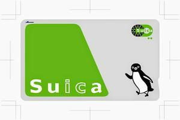
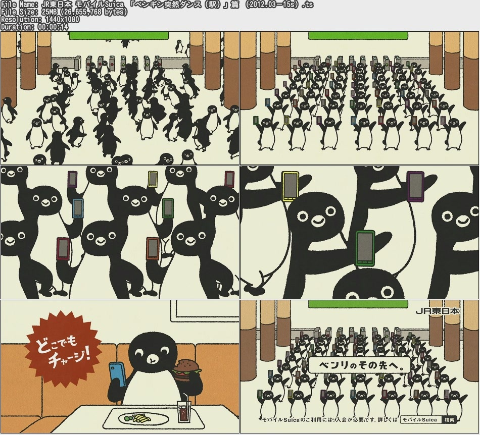
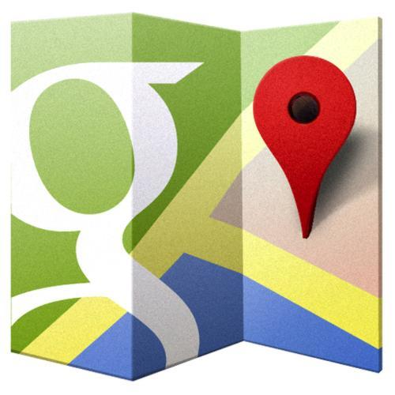
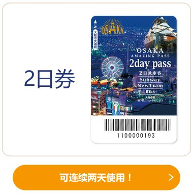
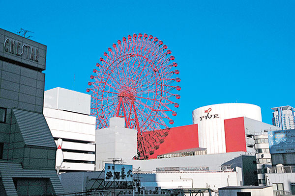
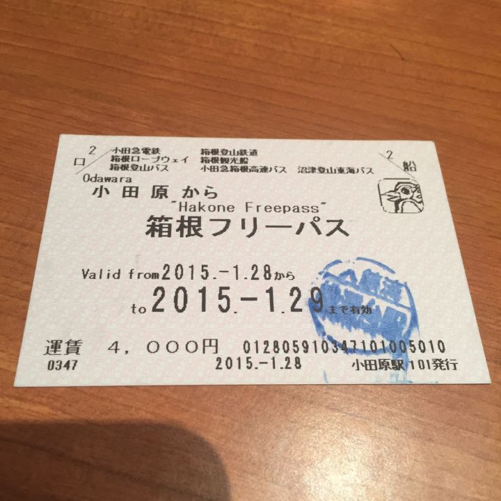
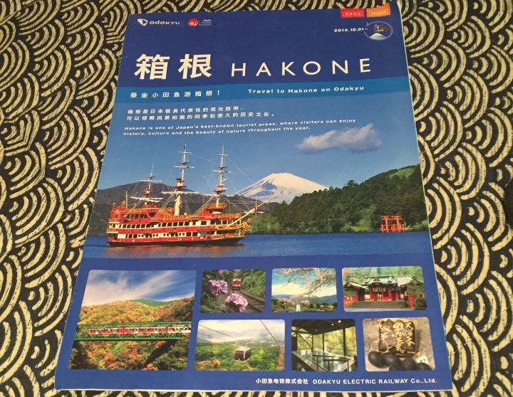
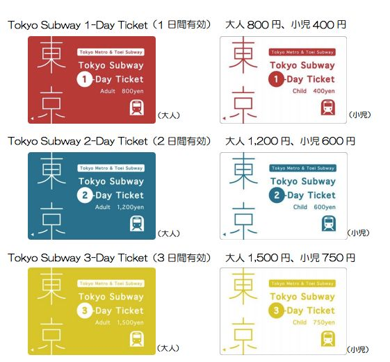
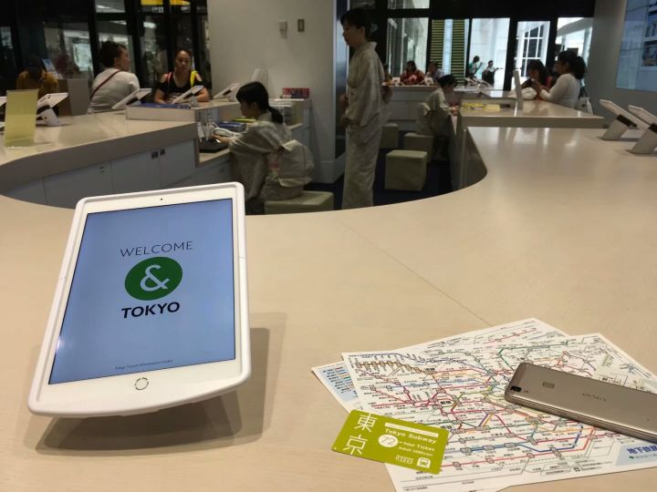

Home
去樱花的国度旅行
Hello大家好，我是抓根，这是我在知乎上写的第一篇文章，想以个人在去年到日本旅行的经历来给大家做一个关于去日本旅行的各种知识的普及，因为不是专业人士，所以可能会有一些不严谨的地方，希望大家见谅！
我去玩的时间是在2017年的暑假，一共玩了十五天左右，从关西地区到关东地区，玩了大阪，京都，奈良，箱根，东京等五个比较有名的城市，总消费包括购物也就一万出头。这是因为在去玩之前就决定好了自己DIY这次旅行,省去了不必要的许多费用（据我所知，许多旅行社的自助游七天的价格都远超于我的“穷游”），所以我的这篇文章会比较适合想自己规划去日本玩，又想尽量把钱花在“刀刃”上的同学们看。
接下来，废话不多说，我将逐个将我准备旅行过程中遇到的问题及其解决方案来讲解如何进行DIY属于自己的日本旅行。
0.写在前面的话
最开始，我觉得每个人对于去日本的期待肯定是不一样的，有人为了美食，有人为了美景，有人为了高质量的服务，有人为了买买买各种日本知名的商品，anyway，最重要的一点其实是自己去搜集所需要的情报，我在去旅行前做了相当充分的准备，许多可能的细节性的问题均在各个网络论坛上或是搜索或是提问得到了解答，这里安利几个APP：
知乎：我乎的便利性与全面性不解释了，有太多前辈们留下的精品回答值得一看，例如：
如果想让自己的旅行与众不同，尤其是和我一样厌恶在熙熙攘攘的人群里挤着排队之类的，这类回答应该会很合你的口味。
马蜂窝：里面有相当多的对于非常细节的问题的解答，我会在接下来的解说中举几个例子。
1.签证、机票与酒店
签证其实非常简单，提前大概半个月以上，通过万能的淘宝，让知名旅行社代签就可以了（并不是不正规，相反，几乎所有的日本旅行签证都是旅行社代签的）。现在去日本旅行的签证条件均在放宽，家里实在不方便达到一些流水单之类的要求的话旅行社大概也是会帮造的吧（误），这里要补充一点，如果你是教育部直属七十五所（好像不止）高校的在校生或近两年的毕业生的话，只要去学校开一个在读证明给旅行社就可以免去资产证明啦~签证费用一般在三百至五百不等，貌似上海领区内的是最便宜的大概就是三百吧，本人因为迁了户口所以在北京领区，不仅麻烦了许多还花了大概四百的样子。。。。。。
订机票的事情是我这次旅行开销加大的原因之一，因为其中一个朋友的日期迟迟不能决定，我们比较迟才订好了机票，一般来说，提前六十天左右订机票才是机票价格最低的时候，因为是主要针对日本旅行的旅行帖，就不再赘述机票的订购技巧了。补充一个tips，本人在买去的机票的时候打错了一个同伴的名字，这一点非常致命，有些航空公司是不给改名字的，这意味着到时候你将不能登机，所以在发现问题后我打了一天的电话去解决这个问题，包括直接打航空公司电话和购票中介某猪的客服电话，终于是没有花费将这个问题解决了，sigh，还是得要细心一点。
酒店的话我们采用了关西地区（大阪，京都）住民宿，关东地区（箱根，东京）住酒店的做法，分别用的软件是：
民宿：Airbnb
酒店：http://Booking.com
使用方法均不赘述（ps：缤客的预订要用visa或者别的信用卡）。但毫无疑问，民宿的费用会低很多但是服务也会一般很多，稍微透露一下花费，关西地区人均住宿花费控制在了150元/天以下，关东地区在箱根我们入住了一个日式榻榻米房间的小型温泉酒店，emmmmm，大概是350元/天，东京则是一家三星级的标准连锁酒店，价格大概是250元/天。选住的地方真的是一门学问，要考虑到交通，饮食等等多方面的问题，当然，我觉得，一个好的住宿场地肯定是旅行最重要的因素之一，等我有钱了我一定来把那些订不起的酒店都住一遍（微笑脸）。
移动Wifi：直接淘宝日本旅游WiFi，一般是淘宝上下单去机场取然后机场还，不再赘述。
2.消费
随着近年来我国去日本旅行的力度加大，消费这件小事简直不要太容易。先不说大一点的店已经开始了支付宝支付和微信支付，如果非要给出建议的话就是适量的现金+西瓜卡+银联卡（信用卡储蓄卡随意）+visa或者别的信用卡（银联）
现金的话找个汇率合适的日子去银行换点儿，不用很多。
银联卡的话我觉得都有吧。。。不过尽量少在日本取钱，还是有点手续费的。
So，这里要提一下我们要用到的神器，如下图所示：

这张卡同样建议在去日本前就在淘宝上买好，价格差不了多少，这张卡里面有1500日元，押金500日元，各个公交站应该都可以充值，使用的话地铁与巴士自然不用说，更厉害的是可以在基本所有便利店里使用，细节的话详见：

说到消费，不得不讲的是日本的购物氛围，基本上大一点的店（大国，松本清之流）都会配上中文导购，买东西的话大概是买到5000+日元就可以免税或者是退税，买东西的时候记得把护照带在身边，因为免税是需要证明你是外国人的。通过免税买到的东西是会装在一个密封的袋子里，严格意义上来讲，这个袋子只有你在离开日本时才可以打开，但事实上偷偷打开也没有问题啦（不建议）~虽然日本海关查的很少，但万一查到了你开封了你就要补交消费税了233
同时，需要注意的是，关西和关东的购物场所里相同的货物价格差异会非常大，总体上来说，关西比较便宜，但种类较少。如果是追求某件东西的质量的话（如refa瘦脸仪、SK2神仙水、黛珂紫苏水），推荐还是去东京的各种大商场和专柜买，像是BIG CAMERA，伊势丹中心店一类的，这种店起码不会买到次品而且服务非常周到。
3.语言、交通与游玩
ok，接下来要讲到的是日本旅游最麻烦也是最的几块内容
首先是语言，说实话，不能正常地和当地的居住者交流和看懂一些文字的话，DIY旅游会丧失掉不少乐趣。但就正常体验而言，绝对算不上困难，因为无论是购物还是点餐，基本都可以用手指头和简单的日语来完成，一方面，这是因为去日本旅行的人很多，为了提升游客的体验日本服务业自己有在下功夫，另一方面，虽然日本人英语很差，但是由于日本中含有不少外来词汇的原因，有些常用的单词经过奇怪的发音后其实就是日文的发音。。。同样，类似于中文的“你好打扰一下”，英文的“Excuse me”等常用语，在日本你听到最多的大概就是“すみません”，就是不好意思的意思，用的非常非常非常非常多！还是建议，想去日本旅行的话最好能掌握一些常用语，会带来不少方便，某种意义上也是在国外提升国人的形象。
然后是最恼人的交通，事实上，如果运用得当的话，一个Google Map就可以解决掉几乎所有的问题！

在国内谷歌地图是被墙了的，但是在日本还是非常好用的，界面也完全是中文，还可以和上面提到的Airbnb与http://Booking.com两个软件实现联动（不会打日文就拷贝地址进行查询）
接下来是如何做到最优化交通消费的步骤，well，首先是机场到室内的这一班车的费用是无法利用周游pass等合算的礼券cover掉的，个人建议下了飞机后在地铁站里提前充值现金（最多2w）到自己的西瓜卡里，用西瓜卡直接刷进站出站就可以啦~不用面对着完全看不懂的买票界面发呆。
然后要介绍的是神器，周游pass：
1）大阪周游pass

强烈推荐这个周游pass，大阪游必买！性价比高于所有其他的周游pass，理由如下：
·有着非常完备的中文解释说明界面，囊括了许多建议的旅游路线【大阪周游卡】
·可以免费游玩大阪35个左右的景点（详见上面↑的链接，注意景点的开放时间和限制），包括天守阁，通天阁，天王寺动物园，水上巴士，HEP FIVE摩天轮，梅田空中阁楼，免费公共温泉等等！what's more？你还可以在各种推荐的设施与店铺中享受优惠！加上免费的交通，在大阪的几天真的是走到腿软的几天，不过也玩的非常尽兴！希望有厉害的人在得知这个途径之后能DIY一条最合理的路线然后写一篇攻略！
天王阁

HEP FIVE摩天轮
·有着超级实惠的价格：一日券2500日元，二日券3300日元，可以无限乘坐大阪的地铁与公交车。一般来讲，日本地铁与公交车的费用都是230日元起步，有的时候，两天的交通费用都接近3000了，所以干嘛不买呢？
·购买地点是在各大地铁站的站长室或者旅游中心，需要持护照购买，建议买2天的一天的根本不够用啊哈哈。
2）箱根周游pass
由于我们是从关西地区直接坐新干线到箱根的，所以说我们买的周游pass是不包括箱根到东京的车票的。箱根的周游pass长得搓了许多，如图:

箱根的交通方式非常有意思，路线类似于一个下凹的二次函数，期间包括了登山电车，登山巴士，缆车，海盗船等等！期间你可以看到大涌谷，强罗公园等等景点，而这一切都只要一张周游pass就搞定了！性价比虽然没有大阪的周游券那么高但总比自己研究路线零散买票强，无论是大阪还是箱根，在买此类券后，你均可以得到一本说明指南，如图:

指南里详细地记载了你需要花费的时间与各种交通工具的出发时间与末班车，可谓非常贴心！
这里又不得不提到我丢东西的不爽之处了，我在大涌谷乱跑的时候，火山风可能吹掉了我的周游pass（微笑脸），害得我下山的旅途多花了大概2000日元的交通费用，让我吃黑温泉蛋的心情都木有了！我顺便丢掉了一本箱根旅游的哆啦A梦主题的集章本（微笑脸），这个本本是可以在每个你到达的车站盖章的，集齐五个以上就可以去换纪念品，ε=(´ο｀*)))唉，大家一定要注意保管好自己的随身物品啊！
3）东京地铁pass
东京的地铁系统可能是这世界上最复杂的系统了，因为和我国不同，东京地铁有好几家公司在运营，包括metro，都营，私铁等等，万一你上错站了叽里呱啦和让你下车的乘务员闹矛盾可就不好了，所以我再次推荐一个性价比极高的通行券！
不得不说这又是一个非常划算的pass！囊括了省钱而且便捷的有点！如图:
 东京地铁pass
可以看到，3日的券仅售1500日元！可以无限次乘坐东京都营地铁和metro公司的地铁（除山手线貌似），这两家的地铁线路已经囊括了东京大部分的区域，可谓说来去自如。当然，这张pass是只有持护照去比较大的旅客中心才能买到的，我们是在新宿站的旅行中心买到的，而且与周游pass不一样的是，这张券是从你开始刷它算72小时的，周游pass只能在当天与明天的时间使用，这在一定程度上增加了这张券的时间，可谓去东京必买！
 日式风格的旅游中心与周游pass 好啦，去日本旅行的攻略第一篇到此结束啦，本人打算根据近期的时间安排再写一到两篇，重点放在一些细节与景点推荐上面，欢迎感兴趣的小伙伴继续关注，ありがとうございます！